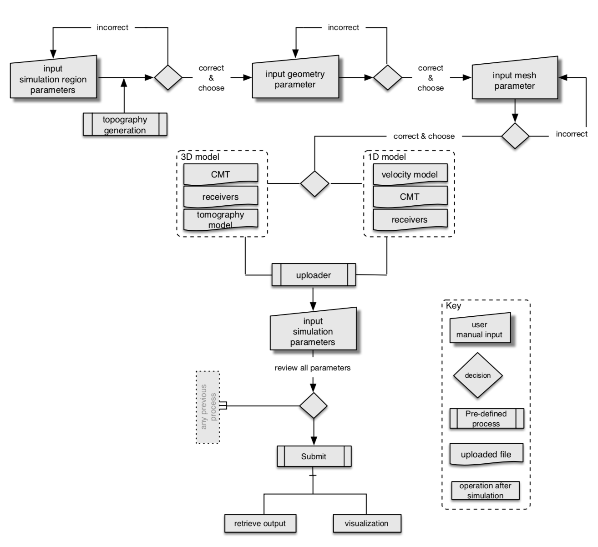
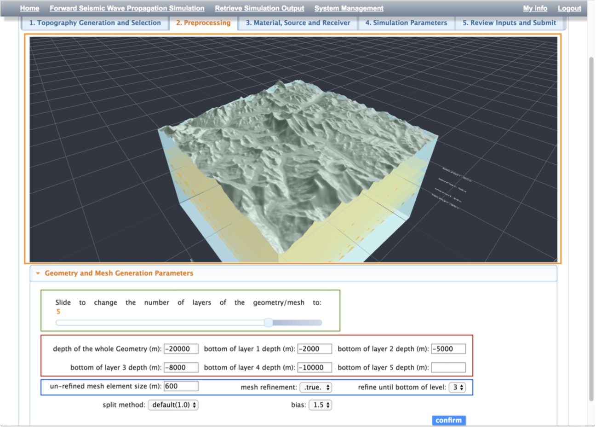
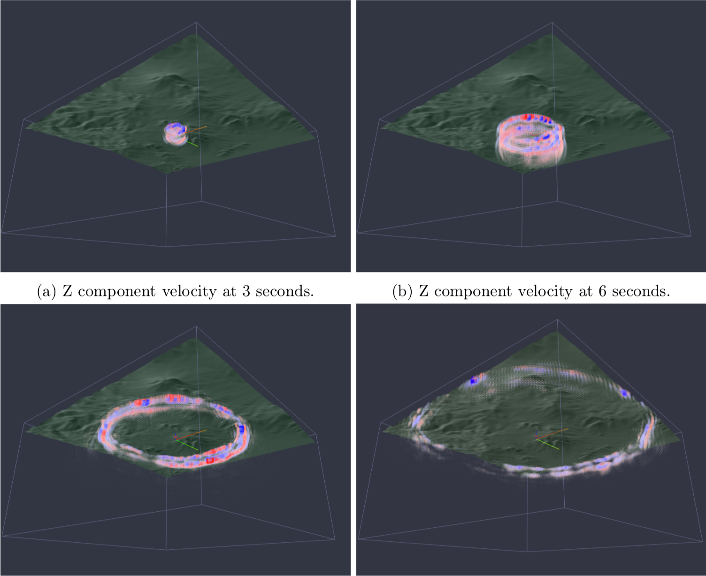

Numerical simulation of 3D seismic-wave propagation is an important tool for earthquake studies. However, developing numerical schemes to solve the governing partial differential equations is not the only challenge. Data acquisition, preprocessing, mesh generation, and visualization rely on diverse tools and expert knowledge, potentially creating an invisible barrier to simulating realistic earthquakes. In this blog, I briefly demonstrate aspects of an integrated web- and HPC-based 3D wave-propagation simulation environment.
To simplify the user workflow, I developed an automated server-side processing pipeline from data acquisition and model generation to simulation execution. I may cover this pipeline in a future post.

In addition, it featured a WYSIWYG environment for real-time visualization during selected preprocessing and post-processing steps (an OpenGL ES 2.0-capable GPU is required). The figure below illustrates a user interface for building an Earth model in a user-defined region.

From the user perspective, once the simulation is finished, they can download the simulation results, or if needed, the 3D results can also be interactively visualized as illustrated below.

Some of the simulation codes in geophysics community would require multiple computing nodes (might be up to few hundreds of nodes) for a physically meaningful simulation. However, unlike simulation itself, for preprocessing and postprocessing, the computational cost is not very high but would require fast processing for realtime or near-realtime user interaction, the slurm queueing time hence should be avoided, how to implement this in a complete architecture might be too complicated and we will not discuss here, as it may be beyond the scope of this blog.
Integrated web-based simulation environment (e-science) development was a popular research topic among some computationally oriented community few years ago. I know that there was an EU funded research project worked by 3-4 universities, aims at delivering a similar solution for earthquake simulation, and there might be another project from Caltech. Science and technology keep evolving, and it seems many spotlight gradually moved away from e-science topics to some other more popular fields nowadays (such as deep learning), still, I hope more e-science projects can emerge and get continuous development to facilitate different research disciplines.
Created by Cong in 2020.